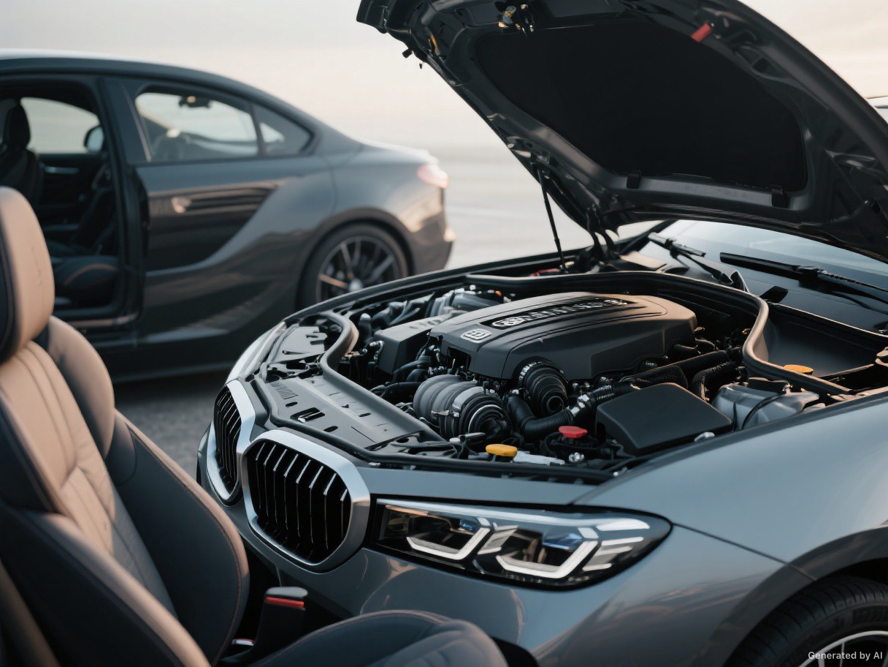
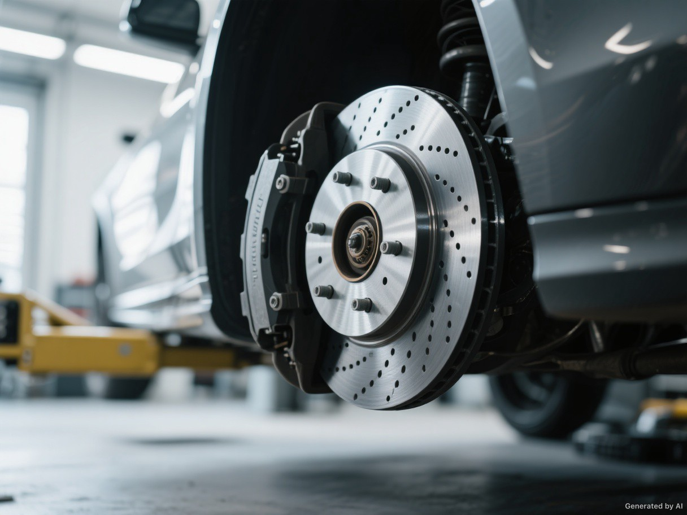
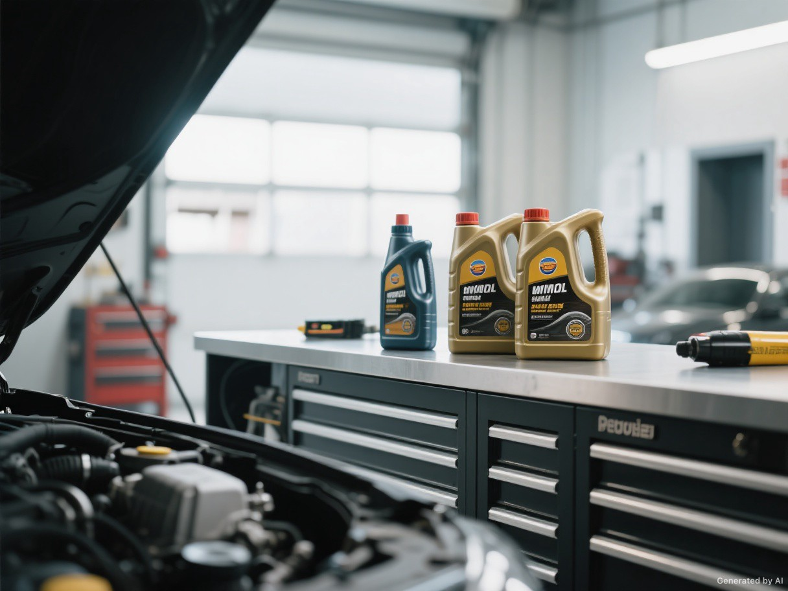

Buying / Checklist
Before you say yes to a used car.
What to check, what to ask and which signs deserve a closer look before you commit.
Read the guideA better way to find your next car
The right car isn't just a set of numbers. Explore the details that change how it feels to live with one.
The journey, made clearer
Maybe you need room for the whole family. Maybe efficiency matters more than acceleration. Or maybe you've already narrowed the field to two cars and need a clearer way to choose.
Start with what matters to you. We'll help you look beyond the headline specs.
Get to know Engine Starters01 / Find your direction
Four ways into the same decision. Choose the one that feels right for where you are now.

Under the surface / 03Know what matters.Understand the systems behind how a car drives and wears.02 / The shortlist
Put two or three cars side by side. Compare listed price, efficiency, performance, warranty and the everyday details you'll actually notice.
Compare cars03 / The details
Buying / Checklist
What to check, what to ask and which signs deserve a closer look before you commit.
Read the guide
Maintenance / Brakes
Noise, dust, durability and feel: the differences worth knowing before replacing your pads.
Read the guideMaintenance / Engine
Understand maintenance intervals and the questions to ask about a car's service history.
Read the guide
Ownership / Oil
Make sense of viscosity grades without losing sight of your car's own specifications.
Read the guideExplore further
Sometimes the next useful question is just around the corner.
A few good questions
Start with vehicle type if your needs are practical and usage-driven. Start with brand if your shortlist is shaped more by reliability, design language, or ownership reputation.
No single metric wins on its own. Price, fuel economy, acceleration, warranty, and cargo capacity usually make the best starting mix because they combine cost and usability.
Start with the body style and brand pages, then use the component pages and inspection articles to judge wear, maintenance risk, and long-term ownership cost more realistically.
04 / Ready when you are
Whether you're browsing or ready to compare, take the next step at your own pace.
Start comparing